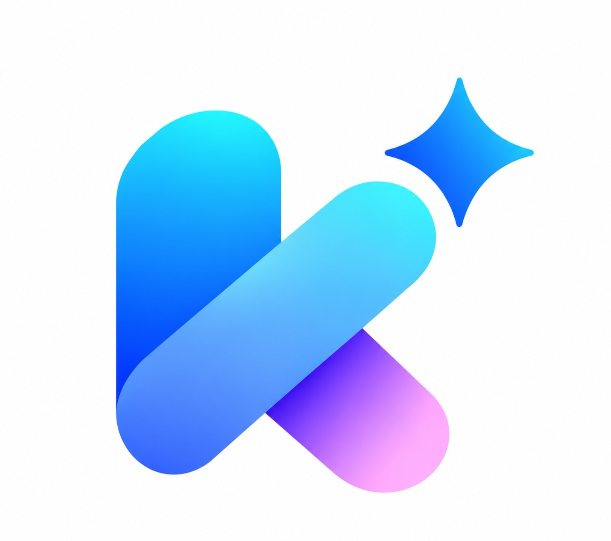

回答の精度
Kuup AI · powered by ASRO
学び、調べ、つくる。あなたのためのAI。
AIは間違えることがあります。大切な情報は確認してください。
このアカウントと端末の表示を整えます。
操作ボタンと選択状態の色です。
送信ボタンと入力中の輪郭に反映されます。
理由や考え方まで、順番に説明します。
最新情報が必要なときの検索方法です。
管理者のみ発行できます。QRは7日間有効で、複数人が利用できます。共有する相手だけに渡してください。
Cookが外部サービスと安全に連携するための設定です。
GitHubでCookに使わせるリポジトリを選べます。Cookは必要なときだけ短時間のアクセストークンを発行し、ブラウザやSQLiteにGitHubトークンを保存しません。
普段はCookにリポジトリ名と変更内容をそのまま伝えるだけでOKです。
リポジトリのコードや設定ファイルを読み込んで、そのままCookに変更を頼めます。
Cookの完成ファイルを1コミットで送ります。
名前とパスワードでログインします。
招待QRを読み取ってください。
スマホ・iPadの標準カメラでも読み取れます。
会話と、このチャットに保存したファイルを削除します。